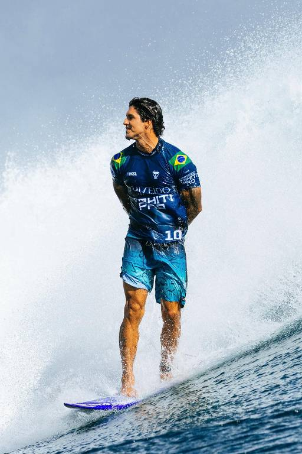

GABRIEL MEDINA
Gabriel Medina é um surfista brasileiro tricampeão mundial (2014, 2018 e 2021) e um dos maiores nomes do esporte. Ele foi o primeiro brasileiro a vencer o circuito mundial e a Triple Crown no Havaí. Em 2024, conquistou a medalha de bronze nas Olimpíadas e fez a maior nota da história olímpica do surfe (9,90). É conhecido por manobras ousadas e por colocar o Brasil no topo do surfe mundial.